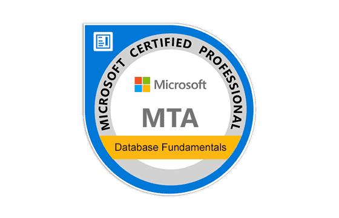

Certifications

AWS Associate - Developer

Azure Fundamentals

MTA Database Fundamentals
Advanced certificate in computer programming
Warehouse Operative
Pizza Chef
Support Technician
AWS Associate - Developer
Azure Fundamentals
MTA Database Fundamentals